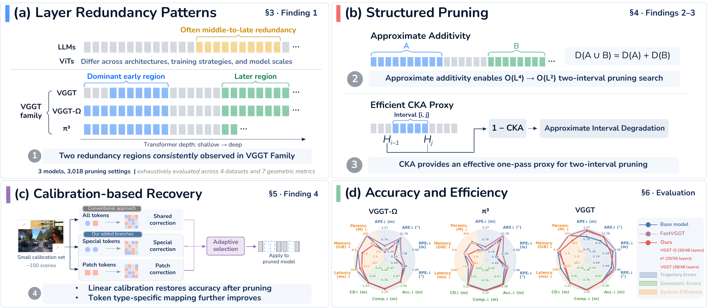

Finding 01
Two separated redundancy regions
A broad early region and a smaller late region recur across backbones, datasets, and metrics; intervals crossing between them are more disruptive.
1 The University of Queensland2 Delft University of Technology3 Harbin Institute of Technology
Scaling feed-forward geometry foundation models improves camera-pose estimation and dense reconstruction. But how much of their trained depth is really necessary? We investigate the multi-view aggregators of VGGT, π³, and VGGT-Ω through 3,018 interval-deletion configurations, evaluated with seven pose and geometry metrics on both indoor and outdoor datasets including ScanNet, 7Scenes, nuScenes, and Waymo.
The resulting landscapes connect the location of redundant layers to efficient pruning search and post-pruning recovery. Calibration on only 100 scenes yields models with up to 44% fewer aggregator parameters and accuracy comparable to the intact models, without end-to-end retraining.

Finding 01
A broad early region and a smaller late region recur across backbones, datasets, and metrics; intervals crossing between them are more disruptive.
Finding 02
Within these regions, summing the effects of individual deletions approximates joint degradation, reducing pruning-search evaluations from O(L⁴) to O(L²).
Finding 03
One intact-model forward pass per calibration input provides representation statistics for CKA-based selection, balancing pruning quality against calibration cost.
Finding 04
Closed-form calibration restores accuracy after pruning. Separate corrections for special and patch tokens address the reconstruction penalty of sharing one map.
Loading result snapshot…
@misc{zhang2026vggtfamily,
title={Does the VGGT Family Need All Its Layers?},
author={Fengyi Zhang and Holger Caesar and Xiangyu Sun and
Zheng Zhang and Zi Huang and Yadan Luo},
year={2026},
eprint={2609.36842},
archivePrefix={arXiv},
primaryClass={cs.CV},
url={https://arxiv.org/abs/2609.36842}
}